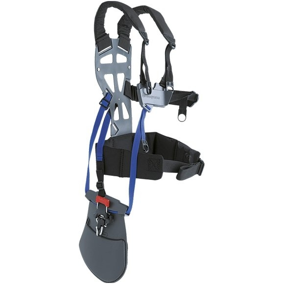
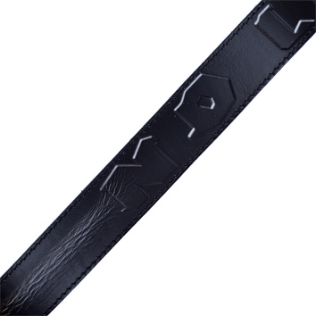
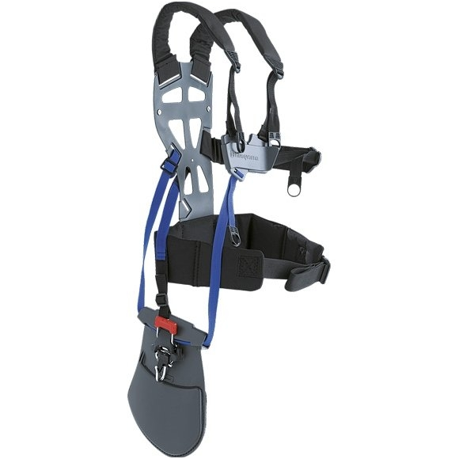
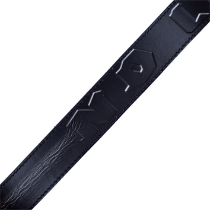

Vyriški diržai
2020.10.30 04:50
Prisijungti arba Registruotis . Pradžia Pageidavimų sąrašas (0) Mano paskyra Prekių krepšelis Pirkti
Prekių krepšelis
0 prekė(-s) - 0.00 €Jūsų pirkinių krepšelis yra tuščias! LT LV info@egalanterija.lt +370 63982960 VYRAMS PINIGINĖS PORTFELIAI RANKINĖS PETNEŠOS DIRŽAI SKĖČIAI AKSESUARAI PIRŠTINĖS KOSMETINĖS LAGAMINAI LAGAMINŲ NUOMA VILNIUJE RANKINIS BAGAŽAS VIDUTINIAI DIDELI KUPRINĖS , RANKINĖS KELIONINIAI KREPŠIAI KOMPLEKTAI AKSESUARAI Graviravimas Apie mus Kalvarijų 168, Vilnius (žėmelapis) + - MOTERIMS PINIGINĖS RANKINĖS KOSMETINĖS DIRŽAI SKĖČIAI PIRŠTINĖS ŠALIKAI PETNEŠOS
+ - VYRAMS PINIGINĖS PORTFELIAI RANKINĖS PETNEŠOS DIRŽAI SKĖČIAI AKSESUARAI PIRŠTINĖS KOSMETINĖS
+ - VAIKAMS SPORTINIAI KREPŠIAI RANKINĖS LAGAMINAI PETNEŠOS SKĖČIAI PIRŠTINĖS
+ - LAGAMINAI LAGAMINŲ NUOMA VILNIUJE RANKINIS BAGAŽAS VIDUTINIAI DIDELI KUPRINĖS , RANKINĖS KELIONINIAI KREPŠIAI KOMPLEKTAI AKSESUARAI
+ - AKSESUARAI DĖKLAI CENTINĖS DOVANŲ KUPONAI
Graviravimas Filtras Kaina € - € Ilgis 100 cm 0 105 cm 0 110 cm 0 115 cm 0 120 cm 0 125 cm 0 130 cm 0 135 cm 0 140 cm 0 150 cm 0 160 cm 0 Pristatymas 7-10 0 Turime vietoje 0 Galanterijos medžiaga Natūrali oda 0 Spalva Juoda 0 Mėlyna 0 Raudona 0 Ruda 0 Pagrindinis VYRAMS DIRŽAI
Vyriški diržai
Jau nuo senų laikų priimta, jog vyro pagrindinis aksesuaras yra diržas ! Dėl šios priežasties, kiekvienas stipriosios lyties atstovas privalo savo garderobe turėti bent keletą, ypač kokybiškų, odinių diržų. Atlikdamas ypatingai svarbią kelnių laikymo funkciją, jis taip pat laikomas - stilingu drabužių puošybos elementu.
E-galanterija vyrams siūlo ypač platų diržų pasirinkimą: įvairių pločių ir ilgių, kurie, kaip žinia, yra labai lengvai trumpinami, taip pat išrankesniems klientams siūlome garsių gamintojų, tokių kaip Calvin Klein , Pierre Cardin gaminius, o stipriosios lyties atstovai, mėgstantys naujoves savo aprangoje galės rinktis iš automatinėmis bei uždaromis sagtimis puoštų diržų.
Sėkmės renkantis Jūsų vyriškumą pabrėžiančius aksesuarus!
Rodymas: Sąrašas Tinklelis Rodyti: 200 25 50 75 100 Rikiuotė: Standartinė Pavadinimą (A - Z) Pavadinimą (Z - A) Kaina (Žema Aukšta) Kaina (Aukšta Žema) Modelis (A - Z) Modelis (Z - A) Vyriškas odinis diržas Modelis: DCA-CZ-40-09Svarbiais įvaizdžio aksesuarais turi rūpintis ne tik moterys, bet vyrai! Neatskiriama vyro garderobo.. 17.00 € 13.60 €
Kaina be PVM: 13.60 € Vyriškas odinis diržas Modelis: DCA-CZ-40-10
Svarbiais įvaizdžio aksesuarais turi rūpintis ne tik moterys, bet vyrai! Neatskiriama vyro garderobo.. 17.00 € 13.60 €
Kaina be PVM: 13.60 € Vyriškas odinis diržas Modelis: DCA-CZ-40-2
Svarbiais įvaizdžio aksesuarais turi rūpintis ne tik moterys, bet vyrai! Neatskiriama vyro garderobo.. 17.00 € 13.60 €
Kaina be PVM: 13.60 € Vyriškas odinis diržas Modelis: DCA-CZ-40-4
Svarbiais įvaizdžio aksesuarais turi rūpintis ne tik moterys, bet vyrai! Neatskiriama vyro garderobo.. 17.00 € 13.60 €
Kaina be PVM: 13.60 € Vyriškas odinis diržas Modelis: DCA-CZ-40-6
Svarbiais įvaizdžio aksesuarais turi rūpintis ne tik moterys, bet vyrai! Neatskiriama vyro garderobo.. 17.00 € 13.60 €
Kaina be PVM: 13.60 € Vyriškas odinis diržas Modelis: DCA-CZ-40-7-1
Svarbiais įvaizdžio aksesuarais turi rūpintis ne tik moterys, bet vyrai! Neatskiriama vyro garderobo.. 17.00 € 13.60 €
Kaina be PVM: 13.60 € Vyriškas odinis diržas Modelis: DCA-CZ-BLU-02
Svarbiais įvaizdžio aksesuarais turi rūpintis ne tik moterys, bet vyrai! Neatskiriama vyro garderobo.. 17.00 € 13.80 €
Kaina be PVM: 13.80 € Vyriškas odinis diržas Modelis: DCA-CZ-PV-01
Svarbiais įvaizdžio aksesuarais turi rūpintis ne tik moterys, bet vyrai! Neatskiriama vyro garderobo.. 17.00 € 13.60 €
Kaina be PVM: 13.60 € Vyriškas odinis diržas Modelis: DCA-CZ-PV-03
Svarbiais įvaizdžio aksesuarais turi rūpintis ne tik moterys, bet vyrai! Neatskiriama vyro garderobo.. 17.00 € 13.60 €
Kaina be PVM: 13.60 € Vyriškas odinis diržas Modelis: DCM35-BR-19-01-04
Kiekvienas save gerbiantis vyras turi turėti natūralios odos, elegantišką ir kokybišką.. 20.00 € 18.00 €
Kaina be PVM: 18.00 € Vyriškas odinis diržas Modelis: DCM35-BR-19-01-12
Kiekvienas save gerbiantis vyras turi turėti natūralios odos, elegantišką ir kokybišką.. 20.00 € 18.00 €
Kaina be PVM: 18.00 € Vyriškas odinis diržas Modelis: DCM35-BR-19-01-2
Kiekvienas save gerbiantis vyras turi turėti natūralios odos, elegantišką ir kokybišką.. 20.00 € 18.00 €
Kaina be PVM: 18.00 € Vyriškas odinis diržas Modelis: DCM35-BR-19-01-23
Kiekvienas save gerbiantis vyras turi turėti natūralios odos, elegantišką ir kokybišką.. 20.00 € 18.00 €
Kaina be PVM: 18.00 € Vyriškas odinis diržas Modelis: DCM35-BR-19-01-3
Kiekvienas save gerbiantis vyras turi turėti natūralios odos, elegantišką ir kokybišką.. 20.00 € 18.00 €
Kaina be PVM: 18.00 € Vyriškas odinis diržas Modelis: DCM35-BR-19-02-22
Kiekvienas save gerbiantis vyras turi turėti natūralios odos, elegantišką ir kokybišką.. 20.00 € 18.00 €
Kaina be PVM: 18.00 € Vyriškas odinis diržas Modelis: DCM35-BR-19-04-3
Kiekvienas save gerbiantis vyras turi turėti natūralios odos, elegantišką ir kokybišką.. 20.00 € 18.00 €
Kaina be PVM: 18.00 € Vyriškas odinis diržas Modelis: DCM35-BR-19-04-4
Kiekvienas save gerbiantis vyras turi turėti natūralios odos, elegantišką ir kokybišką.. 20.00 € 18.00 €
Kaina be PVM: 18.00 € Vyriškas odinis diržas Modelis: DCM35-BR-19-08-1
Kiekvienas save gerbiantis vyras turi turėti natūralios odos, elegantišką ir kokybišką.. 20.00 € 18.00 €
Kaina be PVM: 18.00 € Vyriškas odinis diržas Modelis: DCM35-BR-19-21-03
Kiekvienas save gerbiantis vyras turi turėti natūralios odos, elegantišką ir kokybišką.. 20.00 € 18.00 €
Kaina be PVM: 18.00 € Vyriškas odinis diržas Modelis: DCM35-BR-19-21-04
Kiekvienas save gerbiantis vyras turi turėti natūralios odos, elegantišką ir kokybišką.. 20.00 € 18.00 €
Kaina be PVM: 18.00 € Vyriškas odinis diržas Modelis: DCM35-BR-19-21-05
Kiekvienas save gerbiantis vyras turi turėti natūralios odos, elegantišką ir kokybišką.. 20.00 € 18.00 €
Kaina be PVM: 18.00 € Vyriškas odinis diržas Modelis: DCM35-BR-19-21-11
Kiekvienas save gerbiantis vyras turi turėti natūralios odos, elegantišką ir kokybišką.. 20.00 € 18.00 €
Kaina be PVM: 18.00 € Vyriškas odinis diržas Modelis: DCM35-BR-PV-03
Kiekvienas save gerbiantis vyras turi turėti natūralios odos, elegantišką ir kokybišką.. 20.00 € 18.00 €
Kaina be PVM: 18.00 € Vyriškas odinis diržas Modelis: DCM35-BR-PV-04
Kiekvienas save gerbiantis vyras turi turėti natūralios odos, elegantišką ir kokybišką.. 20.00 € 18.00 €
Kaina be PVM: 18.00 € Vyriškas odinis diržas Modelis: DCM35-BR-XXL
Kiekvienas save gerbiantis vyras turi turėti natūralios odos, elegantišką ir kokybišką.. 26.00 € 23.40 €
Kaina be PVM: 23.40 € Vyriškas odinis diržas Modelis: DLO-K30-006
Vyrams gerą diržą išsirinkti taip pat sunku, kaip ir moterims. Svarbiausia, jog pasirinktas d.. 10.00 €
Kaina be PVM: 10.00 € Vyriškas odinis diržas Modelis: DLO-K35-008
Vyrams gerą diržą išsirinkti taip pat sunku, kaip ir moterims. Svarbiausia, jog pasirinktas d.. 13.00 € 11.70 €
Kaina be PVM: 11.70 € Vyriškas odinis diržas Modelis: DLO-K35-012
Vyrams gerą diržą išsirinkti taip pat sunku, kaip ir moterims. Svarbiausia, jog pasirinktas d.. 13.00 € 11.70 €
Kaina be PVM: 11.70 € Vyriškas odinis diržas Modelis: DLO-K35-013
Vyrams gerą diržą išsirinkti taip pat sunku, kaip ir moterims. Svarbiausia, jog pasirinktas d.. 13.00 € 11.70 €
Kaina be PVM: 11.70 € Vyriškas odinis diržas Modelis: DLO-K35-016
Vyrams gerą diržą išsirinkti taip pat sunku, kaip ir moterims. Svarbiausia, jog pasirinktas d.. 13.00 € 11.70 €
Kaina be PVM: 11.70 € Vyriškas odinis diržas Modelis: DLO-K35-019
Vyrams gerą diržą išsirinkti taip pat sunku, kaip ir moterims. Svarbiausia, jog pasirinktas d.. 13.00 € 11.70 €
Kaina be PVM: 11.70 € Vyriškas odinis diržas Modelis: DLO-K35-020
Vyrams gerą diržą išsirinkti taip pat sunku, kaip ir moterims. Svarbiausia, jog pasirinktas d.. 13.00 € 11.70 €
Kaina be PVM: 11.70 € Vyriškas odinis diržas Modelis: DLO-K35-021
Vyrams gerą diržą išsirinkti taip pat sunku, kaip ir moterims. Svarbiausia, jog pasirinktas d.. 13.00 € 11.70 €
Kaina be PVM: 11.70 € Vyriškas odinis diržas Modelis: DLO-K40-BL-05
Vyrams gerą diržą išsirinkti taip pat sunku, kaip ir moterims. Svarbiausia, jog pasirinktas d.. 17.00 € 13.60 €
Kaina be PVM: 13.60 € Vyriškas odinis diržas Modelis: DLO-K40-BL-07
Vyrams gerą diržą išsirinkti taip pat sunku, kaip ir moterims. Svarbiausia, jog pasirinktas d.. 17.00 € 13.60 €
Kaina be PVM: 13.60 € Vyriškas odinis diržas Modelis: DLO-K40-BL-09
Vyrams gerą diržą išsirinkti taip pat sunku, kaip ir moterims. Svarbiausia, jog pasirinktas d.. 17.00 € 13.60 €
Kaina be PVM: 13.60 € Vyriškas odinis diržas Modelis: DLO-K40-BL-10
Vyrams gerą diržą išsirinkti taip pat sunku, kaip ir moterims. Svarbiausia, jog pasirinktas d.. 17.00 € 13.60 €
Kaina be PVM: 13.60 € Vyriškas odinis diržas Modelis: DLO-K40-BL-11
Vyrams gerą diržą išsirinkti taip pat sunku, kaip ir moterims. Svarbiausia, jog pasirinktas d.. 17.00 € 13.60 €
Kaina be PVM: 13.60 € Vyriškas odinis diržas Modelis: DLO-K40-BLU-03
Vyrams gerą diržą išsirinkti taip pat sunku, kaip ir moterims. Svarbiausia, jog pasirinktas d.. 17.00 € 13.60 €
Kaina be PVM: 13.60 € Vyriškas odinis diržas Modelis: DLO-K40-BR-02
Vyrams gerą diržą išsirinkti taip pat sunku, kaip ir moterims. Svarbiausia, jog pasirinktas d.. 17.00 € 13.60 €
Kaina be PVM: 13.60 € Vyriškas odinis diržas Modelis: DLO-K40-BR-03
Vyrams gerą diržą išsirinkti taip pat sunku, kaip ir moterims. Svarbiausia, jog pasirinktas d.. 17.00 € 13.60 €
Kaina be PVM: 13.60 € Vyriškas odinis diržas Modelis: DSD-DR5-14
Vyrams gerą diržą išsirinkti taip pat sunku, kaip ir moterims. Neatskiriama vyro garderobo de.. 20.00 € 18.00 €
Kaina be PVM: 18.00 € Vyriškas Pierre Cardin odinis diržas Modelis: PRC-50021-GOLD
Odinis diržas – viena iš seniausių ir svarbiausių aprangos detalių, atliekanti ne tik d.. 45.00 € 29.99 €
Kaina be PVM: 29.99 € Vyriškas Pierre Cardin odinis diržas Modelis: PRC-50061-DP01-BL
Odinis diržas – viena iš seniausių ir svarbiausių aprangos detalių, atliekanti ne tik d.. 45.00 € 29.99 €
Kaina be PVM: 29.99 € Vyriškas Pierre Cardin odinis diržas Modelis: PRC-5072-HY01-BL
Odinis diržas – viena iš seniausių ir svarbiausių aprangos detalių, atliekanti ne tik d.. 45.00 € 29.99 €
Kaina be PVM: 29.99 € Vyriškas Pierre Cardin odinis diržas Modelis: PRC-5082-HY01-BR
Odinis diržas – viena iš seniausių ir svarbiausių aprangos detalių, atliekanti ne tik d.. 45.00 € 29.99 €
Kaina be PVM: 29.99 € Vyriškas Pierre Cardin odinis diržas Modelis: PRC-515-HY06-BL
Odinis diržas – viena iš seniausių ir svarbiausių aprangos detalių, atliekanti ne tik d.. 45.00 € 29.99 €
Kaina be PVM: 29.99 € Vyriškas Pierre Cardin odinis diržas Modelis: PRC-515-HY06-DBR
Odinis diržas – viena iš seniausių ir svarbiausių aprangos detalių, atliekanti ne tik d.. 45.00 € 29.99 €
Kaina be PVM: 29.99 € Vyriškas Pierre Cardin odinis diržas Modelis: PRC-519-HY07-BL
Odinis diržas – viena iš seniausių ir svarbiausių aprangos detalių, atliekanti ne tik d.. 45.00 € 29.99 €
Kaina be PVM: 29.99 € Vyriškas Pierre Cardin odinis diržas Modelis: PRC-527-HY01-BL
Odinis diržas – viena iš seniausių ir svarbiausių aprangos detalių, atliekanti ne tik d.. 45.00 € 29.99 €
Kaina be PVM: 29.99 € Vyriškas Pierre Cardin odinis diržas Modelis: PRC-528-HY01-BL
Odinis diržas – viena iš seniausių ir svarbiausių aprangos detalių, atliekanti ne tik d.. 45.00 € 29.99 €
Kaina be PVM: 29.99 € Vyriškas Pierre Cardin odinis diržas Modelis: PRC-530-HY01-BL
Odinis diržas – viena iš seniausių ir svarbiausių aprangos detalių, atliekanti ne tik d.. 45.00 € 29.99 €
Kaina be PVM: 29.99 € Vyriškas Pierre Cardin odinis diržas Modelis: PRC-532-HY01-BL
Odinis diržas – viena iš seniausių ir svarbiausių aprangos detalių, atliekanti ne tik d.. 45.00 € 29.99 €
Kaina be PVM: 29.99 € Vyriškas Pierre Cardin odinis diržas Modelis: PRC-537-HY01-BL
Odinis diržas – viena iš seniausių ir svarbiausių aprangos detalių, atliekanti ne tik d.. 45.00 € 29.99 €
Kaina be PVM: 29.99 € Vyriškas Pierre Cardin odinis diržas Modelis: PRC-538-HY01-BL
Odinis diržas – viena iš seniausių ir svarbiausių aprangos detalių, atliekanti ne tik d.. 45.00 € 29.99 €
Kaina be PVM: 29.99 € Vyriškas Pierre Cardin odinis diržas Modelis: PRC-608-HY03-BL
Odinis diržas – viena iš seniausių ir svarbiausių aprangos detalių, atliekanti ne tik d.. 45.00 € 29.99 €
Kaina be PVM: 29.99 € Vyriškas Pierre Cardin odinis diržas Modelis: PRC-609-HY03-BL
Odinis diržas – viena iš seniausių ir svarbiausių aprangos detalių, atliekanti ne tik d.. 45.00 € 29.99 €
Kaina be PVM: 29.99 € Vyriškas Pierre Cardin odinis diržas Modelis: PRC-AUT-8034-BL
Diržas – būtinas ir labai svarbus aksesuaras vyro garderobe. Svarbiausia, kiekvienam stilingam.. 45.00 € 29.99 €
Kaina be PVM: 29.99 € Vyriškas Pierre Cardin odinis diržas Modelis: PRC-PSN-6206-BL
Diržas – būtinas ir labai svarbus aksesuaras vyro garderobe. Svarbiausia, kiekvienam stilingam.. 45.00 € 29.99 €
Kaina be PVM: 29.99 € Vyriškas Pierre Cardin odinis diržas Modelis: PRC-PSN-6207-BL
Diržas – būtinas ir labai svarbus aksesuaras vyro garderobe. Svarbiausia, kiekvienam stilingam.. 45.00 € 29.99 €
Kaina be PVM: 29.99 € Vyriškas Pierre Cardin odinis diržas Modelis: PRC-PSN-6208-BL
Diržas – būtinas ir labai svarbus aksesuaras vyro garderobe. Svarbiausia, kiekvienam stilingam.. 45.00 € 29.99 €
Kaina be PVM: 29.99 € Vyriškas Pierre Cardin odinis diržas Modelis: PRC-PSN-6208-BLU
Diržas – būtinas ir labai svarbus aksesuaras vyro garderobe. Svarbiausia, kiekvienam stilingam.. 45.00 € 29.99 €
Kaina be PVM: 29.99 € Vyriškas Pierre Cardin odinis diržas Modelis: PRC-VNG-087-BL
Diržas – būtinas ir labai svarbus aksesuaras vyro garderobe. Svarbiausia, kiekvienam stilingam.. 45.00 € 29.99 €
Kaina be PVM: 29.99 € Vyriškas Pierre Cardin odinis diržas Modelis: PRC-VNG-087-BLU
Diržas – būtinas ir labai svarbus aksesuaras vyro garderobe. Svarbiausia, kiekvienam stilingam.. 45.00 € 29.99 €
Kaina be PVM: 29.99 € Vyriškas Pierre Cardin odinis diržas Modelis: PRC-VNG-097-BLU
Diržas – būtinas ir labai svarbus aksesuaras vyro garderobe. Svarbiausia, kiekvienam stilingam.. 45.00 € 29.99 €
Kaina be PVM: 29.99 € Rodoma nuo 1 iki 65 iš 65 (1 puslapių)
Apie mus
Internetinė „E-galanterija“ parduotuvė sėkmingai startavo 2012 metais. Per trumpą laiką mes užsitarnavome vietą ypač konkurencingoje internetinėje erdvėje ir tapome žinoma, patikima elektronine galanterijos prekių parduotuve. Tuo pat metu verslą plėtėme ir tradiciniu būdu – buvo įkurta reali parduotuvė sostinėje, kur klientai visas prekes gali greitai ir patogiai apžiūrėti ekspozicijoje, o norimas – įsigyti. Žengdami koja kojon su naujausiomis mados tendencijomis savo internetinės parduotuvės asortimentą nuolat pildome žymių gamintojų prekėmis. Tokiu būdu jauna, bet ypač veržli mūsų įmonė tik dar labiau pabrėžia savo lojalumą pirkėjų atžvilgiu ir užsitarnauja gerai žinomų vokiečių, prancūzų bei italų odos dirbinių gamintojų pasitikėjimą!
Pristatymas
VENIPAK kurjeriu – prekės pristatomos visoje Lietuvoje per 1–2 d. d . (išskyrus Kuršių Neriją). Siuntimo kaina – 4 €. Prieš pristatydamas siuntą Venipak kurjeris susisiekia su Jumis nurodytu telefono numeriu.
OMNIVA paštomatu – prekės pristatomos per 2–3 d. d. Siuntimo kaina – 3 €. Kai tik siunta bus pristatyta į Jūsų pasirinktą OMNIVA terminalą, gausite SMS žinutę į mobilųjį telefoną. Atvykus prie OMNIVA terminalo tereikės įvesti šešiaženklį durelių kodą, kuris bus nurodytas SMS pranešime.
LIETUVOS PAŠTU – prekės pristatomos per 3–4 d. d. Siuntimo kaina – 3 €. Visos prekės yra siunčiamos registruotu paštu. Pašto darbuotojas nurodytu adresu gavėjui palieka pranešimą, kuriame nurodomas siuntos kodas ir siuntos buvimo vieta.
Atsiskaitymas
Už prekes galima atsiskaityti šiais būdais:
GRYNAIS – pristatymo metu, atvykus Venipak kurjeriui, kuriam prašome turėti lygią pinigų sumą.
GRYNAIS arba BANKO KORTELE – atvykus į „E-galanterija“ parduotuvę Vilniuje, Kalvarijų g. 168. Užsakytas prekes galima atsiimti iš karto tik gavus patvirtinimą SMS žinute, jog Jūsų užsakymas yra paruoštas.
BANKINIU PAVEDIMU arba EL. BANKININKYSTE . Mokėjimo paskirtyje būtina nurodyti suformuoto užsakymo numerį.
KREDITINE/DEBETINE KORTELE - be jokių papildomų banko mokesčių!
Grąžinimas
Per 14 dienų nuo pristatymos dienos prekes galima keisti arba grąžinti. Grąžinama prekė turi būti: originalioje pakuotėje, tvarkinga, nepraradusi prekinės išvaizdos, pirkėjo nesugadinta ir nenaudota. Taip pat norint grąžinti prekę privaloma užpildyti ir el. paštu info@egalanterija.lt bei kartu su preke atsiųsti prekės grąžinimo formą ( parsisiųsti ).
Pastaba. Pinigai grąžinami tik gavus prekę atgal per 3 d. d. Jei klientui buvo pristatyta brokuota ar netinkamos kokybės prekė, siuntimo išlaidas apmokame mes. Grąžinimo atveju pristatymo išlaidos nekompensuojamos. Jei klientas nusprendžia per 14 d. grąžinti prekę be jokios priežasties – transportavimo išlaidas Lietuvos paštu atgal apmoka pats arba nemokamai pristato į mūsų parduotuvę, esančią Vilniuje.
Kontaktai
El. paštas: info@egalanterija.lt
Telefono nr.: 8 639 82960
Parduotuvės/korespondencijos adresas:
Kalvarijų g. 168, LT- 08206 Vilnius
Parduotuvės darbo laikas:
I-IV 9:00-17:00 val. (be pietų pertraukos)
V 9:00-17:00 val.
VI-VII - nedirbame
Banko rekvizitai
Gavėjas: UAB ODELITA
Įmonės kodas: 302817705
PVM kodas: LT100007088610
Sąskaitos nr.: LT464010051002024055 (Luminor)
Registracijos adresas: Viršilų g.13-73, LT-05131 Vilnius
Žemėlapis
Parduotuvė
- Diržai sportui | Apolono papildai
- DIRŽAI - Ginklai medžioklei, savigynai, sportui - Vollit ...
- Diržai moterims - Jai24.LT
- DIRŽAI virš 370 modelių Žema kaina | Varle.lt
- Pasipriešinimo gumos ir diržai
- Diržai internetu | Sportsman.lt
- Diržai Archives - OneDress
- Vyriški diržai - E-galanterija
- Diržai - Survival
- Diržai moterims internetu - Žinomi prekiniai ženklai
- Diržai sportui | Apolono papildai
DIRŽAI . DIRŽAS HUNTER TECH NEO SLING 90CM BERETTA. Įvertinimas: 5.00 iš 5. 29.00 ...
- DIRŽAI - Ginklai medžioklei, savigynai, sportui - Vollit ...
DIRŽAI Antony Morato, Calvin Klein, Emporio Armani... Žemos kainos garantija. NEMOKAMAI atsiimk vienoje iš 16 Varle.lt parduotuvių.
- Diržai moterims - Jai24.LT
Pasipriešinimo gumos ir žiedai – vienos pigiausių sporto priemonių, skirtos norintiems užsiimti aktyvia veikla namie. Be abejonės, šias priemones taip pat rasite ir sporto salėse, pilateso, kalanetikos ir jogos studijose, tačiau norintiems sportuoti namie, nereikės investuoti daug į inventorių, jei pasirinksite pasipriešinimo gumas ir žiedus.
- DIRŽAI virš 370 modelių Žema kaina | Varle.lt
Žinoma, ir šiandien diržai atlieka nemažai praktinių funkcijų, pavyzdžiui, prilaiko drabužius ar sulaiko šilumą. Visgi kur kas dažniau diržai yra stilingi aksesuarai, papildantys aprangą. Mūsų parduotuvėje rasite nedidelį Puma diržų asortimentą. Tai klasikiniai, neutralių spalvų, patogūs ir tvirti diržai. Jie puikiai ...
- Pasipriešinimo gumos ir diržai
Juodieji diržai – išsipildžiusi čempionų vaikystės svajonė www.DELFI.lt. 2020 m. spalio 23 d. 14:00 aA. Lietuvos kiokušin karatė meistrai laiką prieš naująjį sezoną, tradiciškai, praleido ...
- Diržai internetu | Sportsman.lt
Įvairūs diržai sportui leis Jums pasiekti geresnių rezultatų, sportuoti lengviau bei apsaugoti tam tikras kūno dalis. Originalūs Power System diržai juosmeniui skirti kiekvienam jėgos sportininkui, jie apsaugos nugarą ir juosmenį. Šioje kategorijoje taip pat rasite Power System apsaugas riešams, kurios padės išvengti riešo sąnarių traumos.
- Diržai Archives - OneDress
Diržai internetu iš Newmood. Guess, Calvin Klein, Tommy Hilfiger, Diesel ir kitų gamintojų diržai. Greitas prekių pristatymas didžiuosiuose Lietuvos miestuose.
- Vyriški diržai - E-galanterija
Diržai moterims internetu. 4,8/5 įvertinimas (300+ atsiliepimų), galimybė grąžinti/keisti, atsiskaitymas atsiimant!
- Diržai - Survival
Diržai Prekių palyginimas (0) Rūšiuoti pagal: Standartinė Pavadinimas (A - Z) Pavadinimas (Z - A) Kaina (Žema > Aukšta) Kaina (Aukšta > Žema) Įvertinimai (Aukščiausi) Įvertinimai (Žemiausi) Prekės kodas (A - Z) Prekės kodas (Z - A)
- Diržai moterims internetu - Žinomi prekiniai ženklai
Tradiciniai kelnių diržai ne visad yra tinkami pistoleto dėklo nešiojimui. Kasdieniai diržai neturi tokio stabilumo, kokį gali duoti karinis diržas. Tačiau yra kita medalio pusė, juk nesidėsi karinio ..
DIRŽAI . DIRŽAS HUNTER TECH NEO SLING 90CM BERETTA. Įvertinimas: 5.00 iš 5. 29.00 ...
DIRŽAI Antony Morato, Calvin Klein, Emporio Armani... Žemos kainos garantija. NEMOKAMAI atsiimk vienoje iš 16 Varle.lt parduotuvių.
Pasipriešinimo gumos ir žiedai – vienos pigiausių sporto priemonių, skirtos norintiems užsiimti aktyvia veikla namie. Be abejonės, šias priemones taip pat rasite ir sporto salėse, pilateso, kalanetikos ir jogos studijose, tačiau norintiems sportuoti namie, nereikės investuoti daug į inventorių, jei pasirinksite pasipriešinimo gumas ir žiedus.
Žinoma, ir šiandien diržai atlieka nemažai praktinių funkcijų, pavyzdžiui, prilaiko drabužius ar sulaiko šilumą. Visgi kur kas dažniau diržai yra stilingi aksesuarai, papildantys aprangą. Mūsų parduotuvėje rasite nedidelį Puma diržų asortimentą. Tai klasikiniai, neutralių spalvų, patogūs ir tvirti diržai. Jie puikiai ...
Juodieji diržai – išsipildžiusi čempionų vaikystės svajonė www.DELFI.lt. 2020 m. spalio 23 d. 14:00 aA. Lietuvos kiokušin karatė meistrai laiką prieš naująjį sezoną, tradiciškai, praleido ...
Įvairūs diržai sportui leis Jums pasiekti geresnių rezultatų, sportuoti lengviau bei apsaugoti tam tikras kūno dalis. Originalūs Power System diržai juosmeniui skirti kiekvienam jėgos sportininkui, jie apsaugos nugarą ir juosmenį. Šioje kategorijoje taip pat rasite Power System apsaugas riešams, kurios padės išvengti riešo sąnarių traumos.
Diržai internetu iš Newmood. Guess, Calvin Klein, Tommy Hilfiger, Diesel ir kitų gamintojų diržai. Greitas prekių pristatymas didžiuosiuose Lietuvos miestuose.
Diržai moterims internetu. 4,8/5 įvertinimas (300+ atsiliepimų), galimybė grąžinti/keisti, atsiskaitymas atsiimant!
Diržai Prekių palyginimas (0) Rūšiuoti pagal: Standartinė Pavadinimas (A - Z) Pavadinimas (Z - A) Kaina (Žema > Aukšta) Kaina (Aukšta > Žema) Įvertinimai (Aukščiausi) Įvertinimai (Žemiausi) Prekės kodas (A - Z) Prekės kodas (Z - A)
Tradiciniai kelnių diržai ne visad yra tinkami pistoleto dėklo nešiojimui. Kasdieniai diržai neturi tokio stabilumo, kokį gali duoti karinis diržas. Tačiau yra kita medalio pusė, juk nesidėsi karinio ..
 


